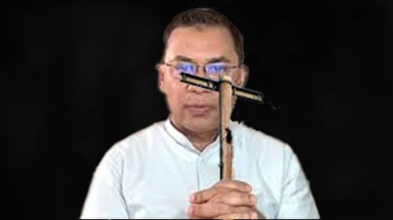

Introduction
Hello netizen's.I am a Bimpi (BNP) supporter.My name is Mahim khoka but people call me Kailla.Though they call me kailla , I don't scold them because I am a very nice person.By the way I made this website for a purpose and the purpose is to help people to know about the benefit of giving chada.
Reasons why you should give us chada
We all know that the previous PM had fleed to india.After his departure here only one political party remains and it is the Bimpi (BNP).They took million dollars from our country.So many sector of our country is suffered by the corruption of previous govt.Now it is our time to build up our nation.To build up our nation,we need many money.Our country is a developed country but most of the people of this country are still poor.Without the participation of these poor people,we can't develop.So for the people we invented a new type of tax and it is called chada.Most of the people know wrong about chada.That's why they consider it as a robbery.But in reality it is totally different from your expectation.Giving Chada is a very noble deed.The poor people aren't able to pay a huge amount of tax.But for them we are here.They don't need to pay a huge amount of tax.In this system they have to pay a little amount of money which is called chada.So,basically chada is called a little amount of money which is given by the poor people.It is performed for good purposes.But we consider it as a serious crime.But the reality is totally different.
So,give us chada as soon as possible.It will be good for you to give us chada earlier.
Form Fill up
Analysis
| Political Party | Current Leader | Chada Type |
|---|---|---|
| BIMPI | Tareq Singh Chada | 10% Chada |
| BAL | Shrek Hasina | Gift |
| Democratic Islamic Party(Jamat) | Dd Amir | Hadia |
| National Children's Party | Sarjis Alam | Donation |
Drop your comments to our great leader
Here are the name of some talented leaders of our party:
- Nirbachino Fakruliano
- He is a talented leader who always cry for Election.His real name is Mirza Fakrul but people call him nirbachon.
- Singaporean Doctor
- His real name is Ruhul Kabir Rizvy but during milestone tragedy he went to hospital wearing a Doctors apron.For this reason people started to call him Singaporean Doctor.
- Unmarried Pennywise
- Her real name is Rubin Farhana.During a live converstaion she smiled in a weird way like Pennywise.That's why people started to call her Pennywise.
- Mahim Kailla
- Mahim Kailla is one of the gratest youngstars of Bimpi.During Hasina's regim he went to Paltan Meeting despite having the risks of death.Now he is an active member of Munshiganj Nagar Bimpi.He is a kind and generous person.His mind is very Fresh.
- Nagar Pita
- His name is Ishraq.He is Sadek Hossain Khoka's son.Despite being the son of a great leader of BNP he illegaly became the Mayor of Dhaka City Corporation.
- Respect Tinku Zia
- Respect Gea
- Respect Evil Nun
- Always try to be a gear soinik
- Always take Chada from people
- You should be loyal to Bimpi
- You can't join any Party such as BAL,Democractic Islamic Party,National Children's Party,etc.
- Chant Joy Bangla
- Resfuse to take chada
- Praise other party's leaders
- Disrespect Zarek Tia
Here is our Main leader's image.Pay respect to him.
